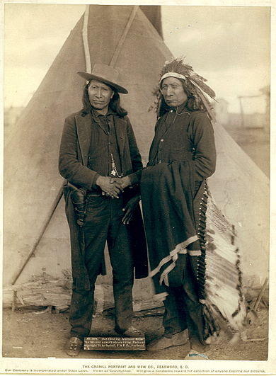
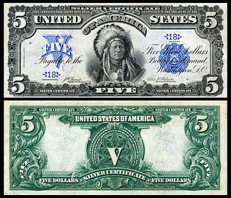

 The Sioux /?su?/ are a Native American tribe and First Nations band government in North America. The term can refer to any ethnic group within the Great Sioux Nation or any of the nation's many language dialects. The Sioux comprise three major divisions based on Siouan dialect and subculture: the Santee, the Yankton- Yanktonai, and the Lakota.
The Santee (Isá?yathi; "Knife"), also called Eastern Dakota, reside in the extreme east of the Dakotas, Minnesota and northern Iowa. The Yankton and Yanktonai (Ihá?kt?u?wa?and Ihá?kt?u?wa?na; "Village-at-the-end" and "Little village-at-the-end"), collectively also referred to as the Western Dakota or by the endonym Wi?híyena, reside in the Minnesota River area. They are considered to be the middle Sioux, and have in the past been erroneously classified asNakota. The Lakota, also called Teton (Thít?u?wa?; possibly "Dwellers on the prairie"), are the westernmost Sioux, known for their hunting and warrior culture.
Today, the Sioux maintain many separate tribal governments scattered across several reservations, communities, and reserves in North Dakota, South Dakota, Nebraska, Minnesota, and Montana in the United States; and Manitoba and southern Saskatchewan in Canada.
The name "Sioux" is an abbreviated form of Nadouessioux borrowed into Canadian French from Nadoüessioüak from the early Odawa exonym: naadowesiwag "Sioux".[3] Jean Nicolet recorded the use in 1640. The Proto-Algonquian form *na·towe·wa, meaning "Northern Iroquoian", has reflexes in several daughter languages that refer to a small rattlesnake (massasauga, Sistrurus).[5] This information was interpreted by some that the Odawa borrowing was an insult. However, this Proto-Algonquian term most likely was ultimately derived from a form *-a·towe·, meaning simply "to speak a foreign language",[3] which would make it similar to the etymology of the Greek "Barbarian". Later this was extended in meaning in some Algonquian languages to refer to the massasauga. Thus, contrary to many accounts, the old Odawa word naadowesiwag did not equate the Sioux with snakes. This is not confirmed though, since usage over the previous decades has led to this term having negative connotations to those tribes to which it refers. This would explain why many tribes have rejected this term as an exonym. One source states that the name "Sioux" derives from a Chippewa word meaning "little snake"; Ojibwe, or Chippewa, is a dialectic variant of Odawa. The current Ojibwe term for the The Sioux and related groups is Bwaan, meaning "roaster" (Bwaan NA, Bwaanag NA' pl.). Presumably, this refers to the style of cooking The Sioux used in the past.
 Some of the tribes have formally or informally adopted traditional names: the Rosebud Sioux Tribe is also known as the Si?há??u Oyáte, and the Oglala often use the name Oglála Lak?óta Oyáte, rather than the English "Oglala Sioux Tribe" or OST. The alternative English spelling of Ogallala is considered improper.
The historical Sioux referred to the Great Sioux Nation as the O?héthi ?akówi? (pronounced [o?t??et?i ?a?kow?]), meaning "Seven Council Fires". Each fire was a symbol of an oyate (people or nation). The seven nations that comprise the Sioux are: Bdewáka?thu?wa? (Mdewakanton), Wa?péthu?wa? (Wahpeton), Wa?pékhute (Wahpekute), Sisíthu?wa? (Sisseton), the Ihá?kthu?wa? (Yankton), Ihá?kthu?wa?na (Yanktonai), and the Thít?u?wa? (Teton or Lakota). The Seven Council Fires would assemble each summer to hold council, renew kinships, decide tribal matters, and participate in the Sun Dance. The seven divisions would select four leaders known as Wi?há?a Yatápika from among the leaders of each division. Being one of the four leaders was considered the highest honor for a leader; however, the annual gathering meant the majority of tribal administration was cared for by the usual leaders of each division. The last meeting of the Seven Council Fires was in 1850.
Today the Teton, Santee (mixture of the four Dakota tribes) and the Minnesota Dakota, and Yankton/Yanktonai are usually known, respectively, as the Lakota, Eastern Dakota, or Western Dakota. In any of the three main dialects, "Lakota" or "Dakota" translate to mean "friend," or more properly, "ally." Usage of Lakota or Dakota may then refer to the alliance that once bound the Great Sioux Nation.